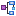

Microsoft SQL Server Contextual Menu Actions
General Contextual Menu Actions
For relational databases, the following general actions are available in the contextual menu of the Data Source Explorer view, depending on the node where it is invoked:
 Refresh
Refresh- Performs a refresh on the selected node.
- Disconnect (available on
 Connection nodes)
Connection nodes) - Closes the current database connection. If a table is already open, you are warned to close it before proceeding.
 Configure Database
Sources (available on Connection nodes)
Configure Database
Sources (available on Connection nodes)- Opens the Data Sources preferences page where you can configure both data sources and connections.
- Edit (available on
 Table
nodes)
Table
nodes) - Opens the selected table in the Table Explorer view.
 Export to
XML (available on Table nodes)
Export to
XML (available on Table nodes)- Opens the Export Criteria dialog box (a thorough description of this dialog box can be found in the Import from Database chapter).
Database-Specific Contextual Menu Actions
In addition to the general contextual menu actions in the Data Source Explorer view, the resource level nodes in
Microsoft SQL Server connections include the following additional contextual menu action:
 XML Schema
Repository Level Nodes
XML Schema
Repository Level Nodes-
- Register
- Opens a dialog box for adding a new schema file in the DB XML repository. In this dialog box, you enter a collection name and the necessary schema files. Schema dependencies management can be done by using the Add and Remove buttons.
- Schema Level Nodes
-
- Add
- Adds a new schema to the XML Schema files.
- Unregister
- Removes the selected schema from the XML Schema Repository.
 View
View- Opens the selected schema in Oxygen XML Editor.